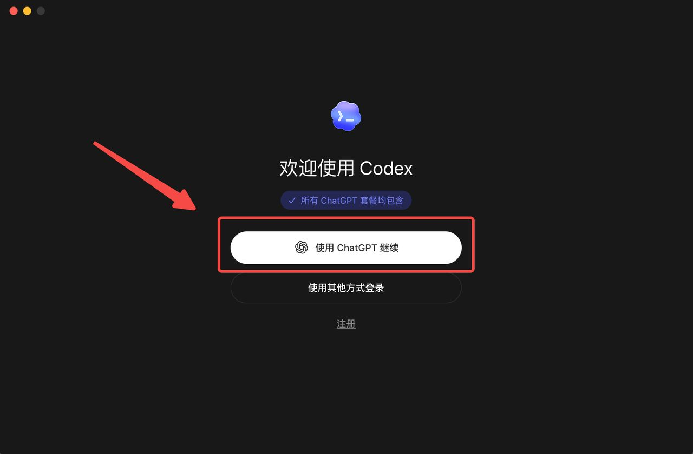
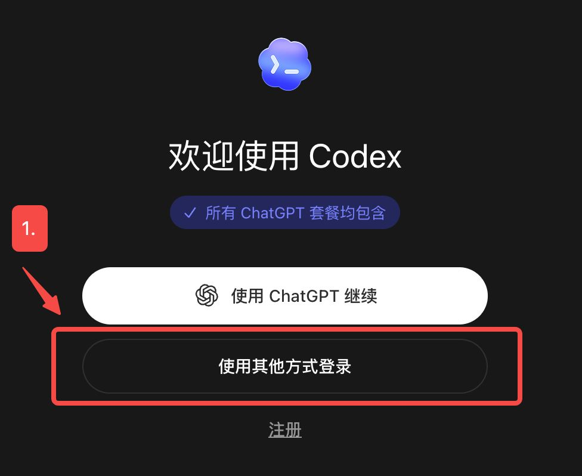
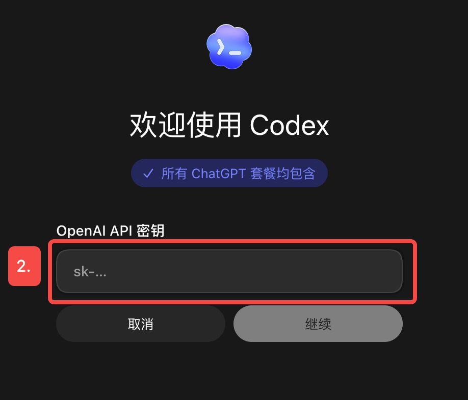

Codex Complete Guide [Video Documentation]
1. Preparation
1.1 Installation & Download (VPN required)
Step 1: Go to the official website to download.
Step 2: Log in to Codex (you can use a ChatGPT account or an API key).
- Log in with a ChatGPT account (just having an account is enough).

- Or log in with an API key (requires separate purchase).


If needed / if you have the means, you can also consider purchasing an OpenAI API key (click here to go to the ChatGPT website to purchase) for login.
1.2 Interface Overview
2. Basic Operations
2.1 Context Management
Step 1: Check the context status.
Step 2: Compress the context.
- You can manually compress by entering the Chinese command
/compress.
2.2 Quota Status
Method 1: Check via System Settings
Method 2: Check via Slash Command
2.3 Model Selection
- Speed has two modes:
- Standard — Default speed, regular quota usage.
- Fast — Overall efficiency improved by 1.5×, but quota consumption also increases.
- Model — You can directly select the latest 5.5 model, or choose other sub-models based on your needs.
- Intelligence level depends on the task difficulty — for general tasks, "Medium" is sufficient.
3. Local File Reading & Writing
Step 1: Create a new project.
- Both options shown below can create a new project or select a local folder.
Step 2: Permission settings.
- Default permissions: Can only read/write all files within the selected folder. If access to content outside the folder is needed, Codex must request permission separately.
- Auto-review: Higher permissions than default. AI automatically checks if an operation poses a risk — flags for approval if risky, executes directly if safe.
- Full access: Codex can perform any operation on your computer without asking for confirmation.
Step 3: Multi-task in a project.
- Supports opening additional parallel conversation tasks within an existing project.
4. Command Line Usage
After enabling Auto-review mode, Codex can work directly via the command line. We can have Codex install various tools for us just by using everyday conversational language.
A drawback of Codex: Currently, files displayed in the "Chat task panel" can be opened in the right-side "Results panel" but cannot be edited.
Solution: Download an "Agent IDE" (an editor with AI). Codex will automatically detect it and add it to the top-right corner. Take Cursor as an example.
- Step 1: Use everyday conversational language to have Codex deploy Cursor.
Please check if Cursor is already installed on my machine; if not, install it for me.
If already installed, set the default target for the "Open Editor" button in
the top-right corner of the Codex desktop app to Cursor, and verify that it works.- Step 2: Once deployed, Cursor will be pinned to the top-right corner; after that, files can be opened and edited directly in Cursor.
5. Persistent Memory
Method 1: Global-Level Long-Term Memory
- The Global Agents.md — no matter which project you're in when talking to Codex, it will immediately pass the recorded memories as context to the large model.
- The Global Agents.md is suitable for recording rules that apply to all tasks, such as your usage habits, work preferences, etc.
Step 1: Find "Personalization" in "Settings".
Step 2: Directly add the desired rules and constraints in "Custom Instructions", such as personal usage habits, work preferences, etc.
Step 3: You can also directly use everyday language during chat tasks to explain your rules, and finally ask Codex to add them to the "Global agents.md".
Method 2: Project-Level Persistent Memory
- The Project-Level agents.md only takes effect persistently within a specific project.
Step 1: Open the editor within the specific project (e.g., Cursor).
Step 2: Create a new file in the editor and name it: AGENTS.md. (Note: AGENTS must be in uppercase.)
Step 3: Directly add the rules you want in AGENTS.md using natural language.
Step 4: You can also directly use everyday language during chat tasks to explain your rules, and finally ask Codex to add them to the "Project AGENTS.md".
Method 3: Auto Memory
- The auto memory mechanism works like this: after you finish a conversation or task and remain idle for a while, Codex will summarize your previous conversations into memories and reuse them in subsequent conversations and projects.
Step 1: Find "Enable Memory" under "Personalization" in "Settings".
Step 2: Auto memory files are generally located in the /Users/xxxx/.codex/memories folder.
6. Large-Scale Project Planning & Execution
For projects with a certain level of complexity, or projects you haven't fully figured out yet, you can enable Plan Mode to refine project ideas and approaches under Codex's guidance, and then execute.
Step 1: Create a new project.
Step 2: Turn on "Plan Mode".
Step 3: (Using "Build a personal website from scratch" as an example) Follow Codex's guidance — refine the plan through guided selections or by entering your own prompts.
Step 4: After the plan is generated, you can also provide your own suggestions to adjust the plan.
Step 5: After plan execution begins, if you're not satisfied, you can temporarily submit suggestions and click "Guide" to submit them at an appropriate moment. The execution process will not be interrupted.
Step 6: If you're unsure about some ideas during execution, you can use Fork to test a copy — this way you won't mess up the main task.
Step 7: While waiting, you can choose or customize a desktop pet under "Appearance" in "Settings". When awakened, the pet will tell you what Codex is currently doing.
Step 8: In the top-right corner of the results preview interface, you can select "Annotations" to annotate the generated content. After annotating, send it to Codex for modifications.
Step 9: After the project is complete, you can ask Codex to generate a Project-Level AGENTS.md based on the project you just completed.
7. Plugins
7.1 Plugin Location & Status
7.2 Plugin Directory (Chinese)
Essential Plugins
| Plugin | Category | What It Does |
|---|---|---|
| Chrome | Featured | Handle web tasks using your browser login session — suitable for researching, testing pages, and organizing web information. |
| GitHub | Featured | View repos, PRs, Issues, and CI status — suitable for code collaboration, review, and release workflows. |
| OpenAI Developers | Featured | Query official development resources for OpenAI API, Agents, ChatGPT Apps, Codex, and more. |
| Vercel | Featured | Build and deploy web apps, agents, and preview environments. |
| Netlify | Coding / Engineering | Deploy frontend projects, manage preview environments, configure sites and functions. |
| Sentry | Coding / Engineering | View online errors and events — helps locate bugs, reproduce issues, and assess impact scope. |
| Remotion | Design | Create dynamic images / programmatic videos from prompts. |
| HyperFrames by HeyGen | Design | Write HTML and render videos — suitable for generating dynamic visual content. |
7.3 Key Plugin Introductions
| Plugin | Function | Use Cases | Example Scenarios | Notes |
|---|---|---|---|---|
| Browser | Lets Codex operate its built-in browser | Typically used for frontend automated testing | 1. Auto-login to websites 2. Click buttons 3. Fill out forms 4. Page scrolling & screenshots 5. Verify page functionality and styling |
For public web pages, local previews, and pages that don't require login — prefer using Codex's built-in Browser. |
| Computer Use | Gives Codex an extra pair of "eyes" and a "mouse" — can control all computer software | 1. Scenarios where CLI or plugins aren't enough 2. Scenarios that rely entirely on graphical interface interaction |
1. Open music software and search for songs 2. Use the WeChat interface to send messages 3. Test desktop apps 4. Reproduce UI bugs 5. Check import/export workflows |
Currently macOS only |
| Chrome | Codex controls the real Google Chrome browser and performs browser operations in the background | Suitable for browser tasks that "must be done logged into a real website" | 1. Open Gmail to check emails 2. Log into a company backend to update info 3. Compile information across multiple web pages |
Will not directly take over the window you're currently using, so it won't interfere with your normal use of Google Chrome. |
8. Skills & CLI
You can directly throw Skill and CLI download links to Codex for automatic download, and complete deployment under Codex's guidance.
8.1 Recommended Skills to Download
| Skill Name | Function | Download |
|---|---|---|
| Find-Skill | A meta-skill that finds and installs skills from the open Agent Skill ecosystem based on user needs. | GitHub |
| Frontend-Design | Creates frontend interfaces with unique style, production-grade quality, and refined design. | GitHub |
| humanizer-zh | A Chinese-localized version of Humanizer — removes the AI-generated feel from text content. | GitHub |
8.2 Skill Collection Website: LobeHub
You can browse for skills by category, or directly check out recommended high-quality skills in the curated collections.
8.3 Creating Your Own Skill
Using the example of creating a skill that "automatically writes a 'This Week's GitHub Trending Projects' article":
Step 1: Ask Codex to compile this week's trending GitHub projects and explain what each project does.
What are the latest trending and popular GitHub projects this week?
Clearly explain what each project does.Step 2: Filter for 5 projects that match your writing goals and have the most stars, then write a "This Week's GitHub Trending Projects" article.
From the compiled list, select the 5 projects with the most stars across three
domains — AI Programming, Research, and Learning — and write a "This Week's
GitHub Trending Projects" article.Step 3: Use the slash command to invoke the already-downloaded humanizer-zh skill to remove the AI-generated feel from the article.
Step 4: Polish the article's content and format.
Add a fixed intro and outro, use image2 to generate some accompanying images,
and finally output as a Feishu document.Step 5: Ask Codex to consolidate the entire process into a single skill.
Integrate and optimize the entire set of actions, steps, and standards from
the above process into a single skill.Step 6: You can now invoke and use this skill via a slash command.
8.4 Recommended CLI Tools to Download
| CLI Name | Function | Download |
|---|---|---|
| Feishu CLI | Feishu's official CLI tool, covering core business domains such as messaging, documents, multi-dimensional tables, spreadsheets, slides, calendar, email, tasks, and meetings. Provides 200+ commands and 24 AI Agent Skills. | GitHub |
| OpenCLI | A universal command-line toolbox — a general-purpose CLI hub and AI-native runtime platform that can turn any website, desktop app, or local program into a unified CLI interface. | GitHub |
| GitHub CLI | GitHub's official command-line tool. It brings pull requests, issues, and other GitHub concepts into the terminal, right alongside where you're already using git and code. | GitHub |
| Gemini CLI | Gemini CLI brings Gemini's capabilities directly into the terminal. It provides lightweight access to Gemini, allowing you to access Gemini models from terminal commands in the most direct way possible. | GitHub |
Also recommended — a GitHub page that curates CLI themes: Command-line interface. You can browse and find the CLI tools you need.
9. MCP
9.1 MCP Location
9.2 MCP Installation
For beginner users, you can directly copy the MCP link and give it to Codex — let Codex handle the rest and ultimately guide you through authorization.
- Using notebooklm MCP as an example, you can proceed as follows:
Step 1: Input the instruction in natural language.
Please install the notebooklm MCP for me:
https://github.com/PleasePrompto/notebooklm-mcpStep 2: Follow the guidance to restart and authorize.
Step 3: Confirm successful download under "Settings" → "MCP Servers".
9.3 MCP Extensions
Regarding MCP, you can study and practice using the MCP sections within the following tutorials:
Learning Resources
📺 Video Tutorial: Create Your Personal AI Assistant Team with the Amazing Claude Code! [Beginner's Guide]
📄 Documentation Tutorial: Claude Code Tutorial
10. Automation Tasks
Method 1: Automation Panel
Step 1: Open the "Automation" panel.
Step 2: Create a new automation / or choose an official sample that closely matches your needs.
Step 3: Complete the automation task setup.
Method 2: Set Up via Natural Language Interaction
Set up automation tasks by interacting with Codex in everyday language in the chat dialog, for example:
Help me create an automation task that runs every Monday at 9 AM.
The task is: automatically execute the trending projects recommendation skill,
generate an article with images, and post it to the Feishu group.Extended Learning: Claude Code Tutorial
📺 Video Tutorial: The Most Comprehensive! Master Claude Code in 60 Minutes ~ [With Complete Documentation]
📄 Documentation Tutorial